IT Security Management & DevOps · Individual Project
ITSM Ticket Management System
Containerization, Kubernetes deployment and observability of a Django ticket application
Kaushal Patidar · Student ID 10008313 · Academic Year 2025–2026 Reference: ITSM & DevOps project report and repository evidence
Executive summary
This project rewrites a ticket CRUD service as a Django application and delivers it with MariaDB, Gunicorn, Docker, Docker Compose and Minikube Kubernetes. The application supports authenticated ticket creation, listing and search, editing and deletion, with a public health endpoint for probes. Evidence documents the application workflow, database persistence, Kubernetes deployment, a 500 virtual-user load test and automatic container recovery.
20,028HTTP requests · 500 VUs · 60 seconds
321.5Requests per second at 500 VUs
0%Failed requests in 500-VU run
1.20 s500-VU p95 latency
Outcome: All checks passed and the application stayed running, but p95 exceeded the 1-second target. CPU quota saturation and throttling indicate a CPU-bound bottleneck at this load.
Solution overview
Application and data
Django MVT architecture with authentication, ticket forms and search. MariaDB 11.4 stores relational records through Django ORM. Tickets include category, priority and status fields. The health endpoint returns application health without requiring a login.
Packaging and orchestration
Multi-stage Python 3.12 container runs Gunicorn as a non-root user. Docker Compose connects web and database services with health checks and persistent database storage. Minikube hosts a namespaced web Deployment and MariaDB StatefulSet with probes, resource requests and limits, PVC storage and an HPA.
Area
Implementation / evidence
Ticket workflow
Create, list/search, update and delete; authenticated browser flow verified against Kubernetes and database state.
Deployment
Docker image and Compose setup; Minikube namespace, web Service/Deployment and MariaDB StatefulSet.
Health and recovery
HTTP health probes; observed container restart and return to Ready state about one second later.
Performance
k6 public-page scenario; 200-VU host run and 500-VU in-cluster run, each 60 seconds. These network paths differ.
Performance findings
Measure
200 VUs · host port-forward
500 VUs · in cluster
Interpretation
Requests / throughput
15,534 / 253.5 req/s
20,028 / 321.5 req/s
Throughput approaches a plateau under higher concurrency.
Failed requests / checks
0% / 100%
0% / 100%
All measured checks passed.
Average / p95 latency
281 ms / 478 ms
1.02 s / 1.20 s
500-VU p95 crossed the 1-second threshold (k6 exit code 99).
CPU / memory
Web pod near 1 CPU limit; about 88 MiB memory versus 1 GiB limit.
CPU-bound; memory was not the limiting resource.
Interpretation. During the 500-VU window, cgroup counters show about 61.5 CPU-seconds used and 77.3 seconds throttled; 79.3% of scheduling periods recorded throttling. Approximately 3.07 ms CPU per request implies a ceiling near the observed throughput for one CPU core. No pod restart or memory-pressure failure was reported after the run.
Operational observations and next steps
Observed
Kubernetes restarted the web container after its process exited; the container returned to Running and the pod became Ready.
HPA scaled the web deployment from one replica up to five, then scaled back after the load ended.
Metrics and cgroup CPU counters identify CPU throttling as the primary measured bottleneck.
Limitations and follow-up
200-VU host and 500-VU in-cluster measurements use different network paths.
Load testing covered public login and health pages; database writes were not load-tested.
Time-series latency output and Prometheus/Grafana monitoring were not configured.
Improve CPU capacity or workload efficiency, then repeat comparable runs and verify scaling under active traffic.
Security and readiness
Positive controls include a non-root application user, slim runtime image, database not published to the host, secret references for database credentials, authentication on ticket views and resource limits. The reference report also identifies development-grade configuration such as DEBUG=True and a placeholder secret key; production deployment requires secure settings and managed secrets.
Evidence basis: supplied reference report, project README and screenshots. Results are reported as documented in those materials; deployment behavior can vary by environment.
Screenshot appendix
Screenshots are ordered to follow the project report from setup through verification and final repository evidence. Captions show source filenames.
STEP 01 / 06
Application and container setup
Build, database preparation, and application startup.
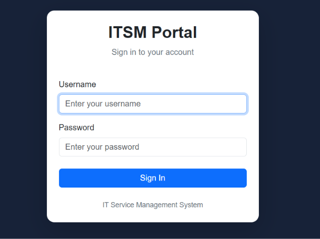
1.1.png
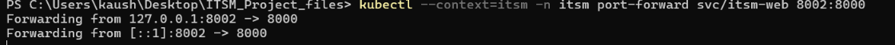
1.png
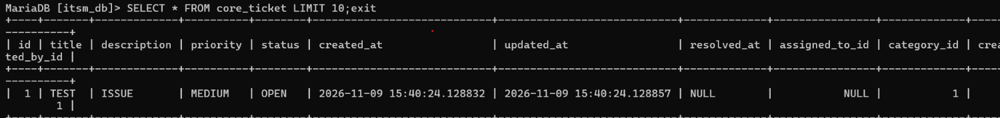
3.1.png
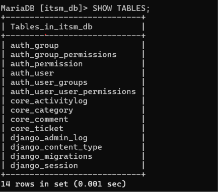
3.png
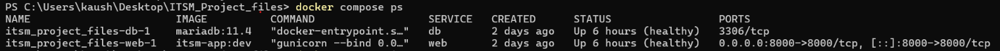
7.png
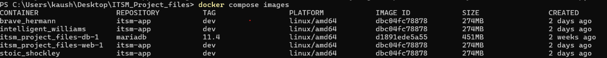
8.png
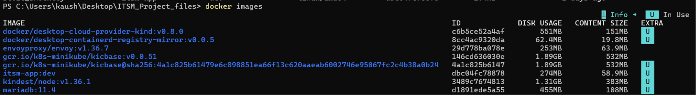
9.png
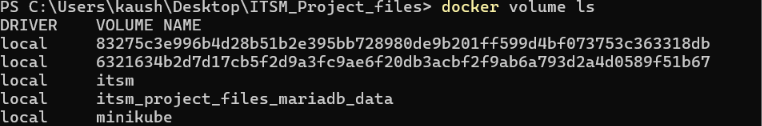
10.png
STEP 02 / 06
Kubernetes deployment and verification
Cluster, namespace, workload, pods, services, and runtime checks.
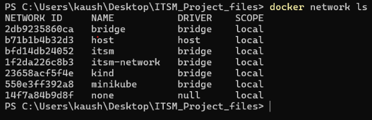
11.png
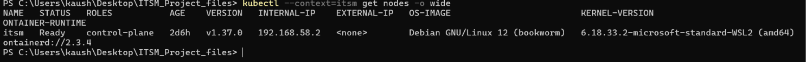
12.png
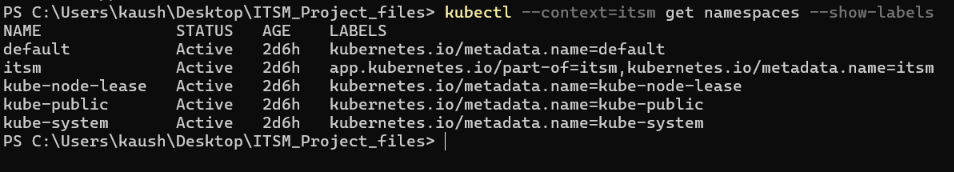
13.png
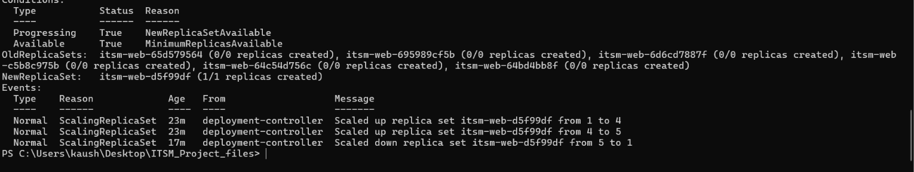
14.1.png
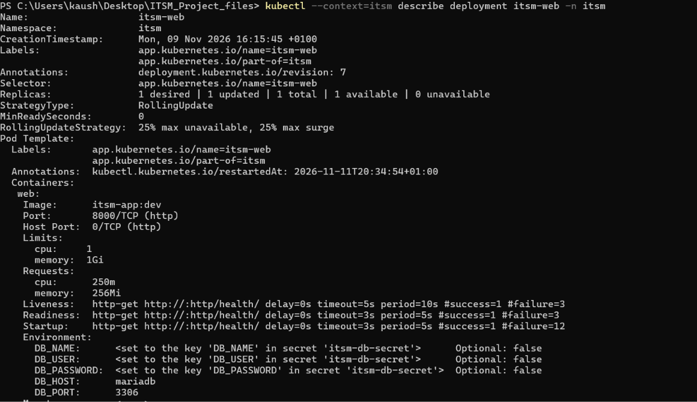
14.png
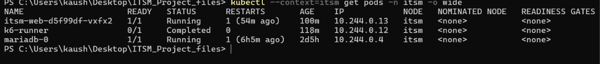
15.png
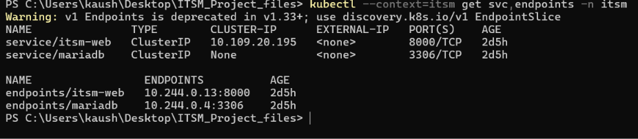
16.png
STEP 03 / 06
Ticket workflow validation
Read the ticket list, then follow create, update, delete, and database confirmation evidence.


.png)
.png)